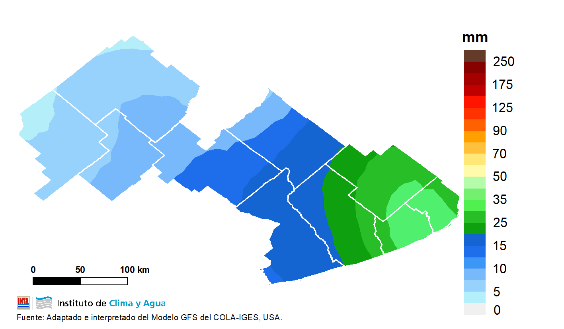

Pronóstico semanal

El martes 20 sobre la región se prevé el ingreso de una masa de aire más fría acompañada por vientos del sector sudeste, marcado descenso de las temperaturas y nubosidad variable. Habría tiempo inestable para el miércoles 21 y jueves 22. Se podrían registrarían heladas débiles a moderadas en la zona entre el martes 20 y jueves 22. Hacia el domingo 25, un sistema frontal se desplazaría sobre la provincia con aumento de la nubosidad, vientos moderados del sector sudoeste y probabilidad de lluvias y chaparrones de variada intensidad; algunas podrían ser localmente intensas con abundante caída de agua y ráfagas.
De este modo, la anomalía de precipitación, sería superior a lo normal para la época sobre el sudeste, e inferior hacia el noroeste.
Estado actualizado de los principales cultivos
Campaña fina
Los cultivos de trigo y cebada transitaron el mes de agosto
acompañados con un escaso régimen de lluvias y bajas
temperaturas en la mayor parte del territorio de la EEA
INTA Balcarce. El estado de desarrollo en los lotes
relevados varió entre primera y segunda hoja desarrollada
(Z1.1/1.2 Escala Zadocks) en los cultivos sembrados a fin
de julio o principios de agosto, y entre inicio y pleno de
macollaje (Z2.2 Escala Zadocks) en los de siembras
tempranas. En éstos últimos se observó un retraso en su
desarrollo, ya que se esperaría que se encuentren en fin de
macollaje en esta época del año en la región.
En cuanto al estado sanitario de los cultivos, no se observó
presencia de enfermedades en general. En algunos lotes
se observaron manchas de fitotoxicidad producto de daño
por herbicidas o de algún otro factor abiótico. Tampoco se
observó la presencia de plagas.
Pastizales y pasturas
Durante el mes de agosto las bajas temperatura y las
escasas precipitaciones en la mayor parte del territorio no
lograron compensar la falta de stock forrajero en la
mayoría de los sistemas pastoriles del territorio de la EEA
INTA Balcarce.